We have a storefront office on a major commercial corridor. Most clients still like to come to our office for IRL meetings.
We are located in the vibrant Fishtown neighborhood of Philadelphia. Forbes named it "America's Hottest New Neighborhood" and we contributed towards its revitalization.
This is how our office looked when we bought the building. Not only did we buy and renovate the building, we did a LEED certified renovation.
This is what the buildings looked like before the renovation.
And after. It took a lot of work, but we were able to achieve LEED Platinum, the highest level of LEED certification.
It was the first LEED Platinum Mixed-use rehab in Philadelphia
It was a big deal, the mayor came and spoke at our open house.
We have clients all over the country, but they are mainly on the Mid-East coast.
We have clients in New York
Baltimore. And of course,
Most of our clients are in the greater Philadelphia region.
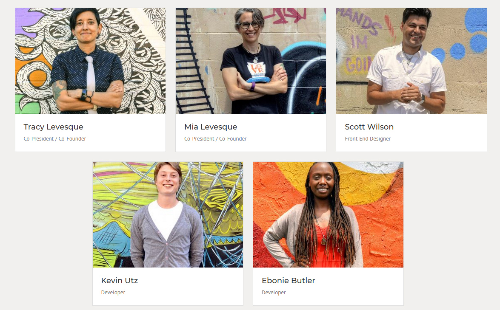
This is our team, we are small, efficient and great at hitting tight dealines.
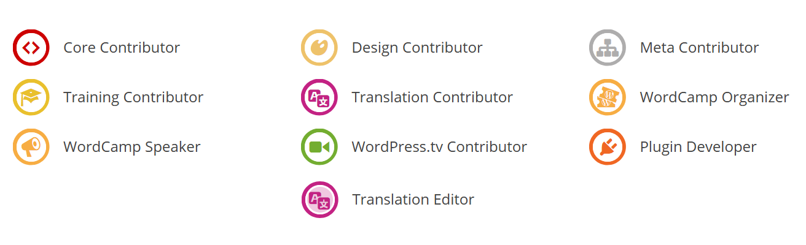
We are deeply involved in the WordPress community. These are all of our contributor badges combined.
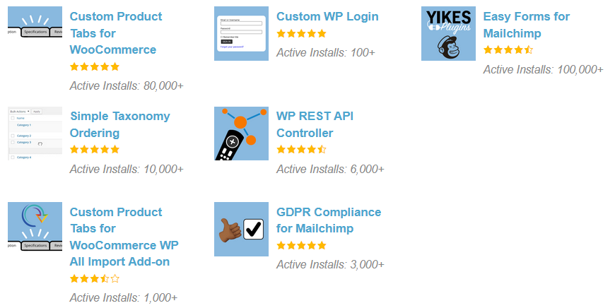
We also have a suite of plugins with over 200K active installs and 2 million downloads combined.
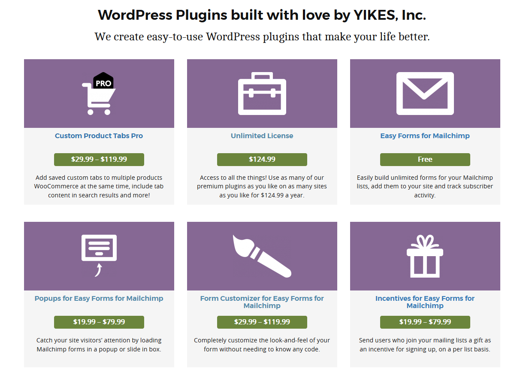
We also sell pro add-ons for our plugins.
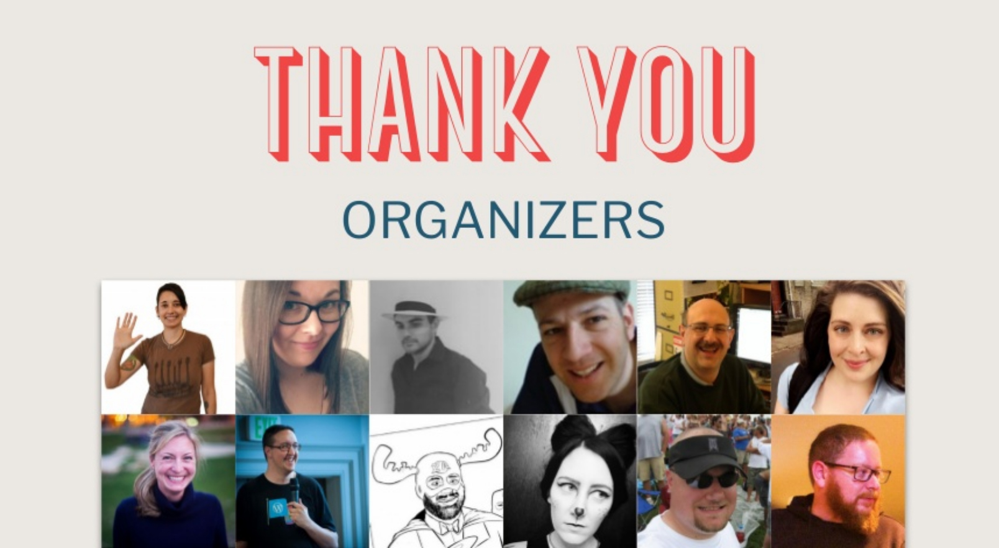
We have been involved with organizing major WordPress events such as the first 2 inaugural WCUS. I have been immortalized in slide form in 2 States of the Word.
I was the primary organizer of the last US WordPress Community Summit. I've attended the last 3 Community Summits.
I've spoken at numerous WordPress events including
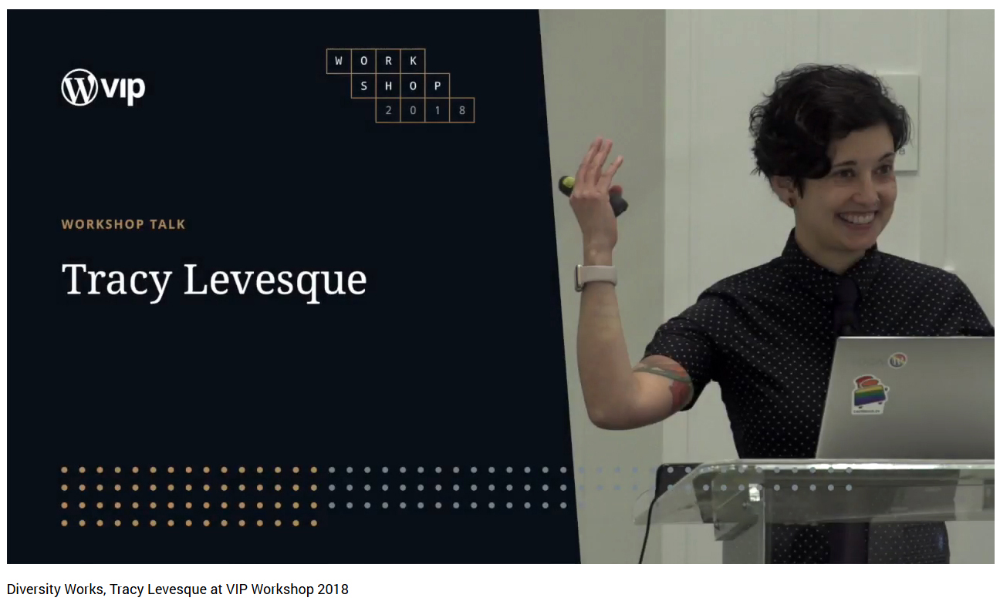
The last WordPress VIP workshop
And I gave the Keynote at the last WordCamp Philly. But one of the biggest contributions to the WordPress community we have ever made.
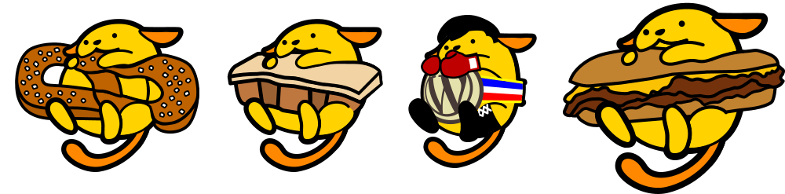
Is the first North American Wapuu.
Our Project Passions
Mia: Over our many years creating websites, we have countless projects that we feel passionate about. But don't worry, we're only going to talk about a few.
We Love Nonprofits
Mia: As a mission driven business, we have a synergy with these organizations. As founders with backgrounds in nonprofit work, we pride ourselves on a unique understanding of what nonprofits go through to get a web project done - from funding and budgets, to regulatory requirements, to collaboration with multiple stakeholders such as executive directors, board members and staff, all with potentially varying goals.
Mia: Philadelphia FIGHT has been our client since 1996. Over these years they have grown from a tiny HIV/AIDS research and advocacy organization to a federally qualified health center (FQHC) with multiple locations and patient populations a multimillion budget. As they have grown, so have their website needs and goals.
WordPress Multisite allows us to efficiently manage their complex needs, providing branding consistency while delivering flexibility for sharing content/CPT across sites, creating organization specific tools for improved workflow, developing robust features such as a customized searchable online resource directory. We are constantly improving current features and rolling out new functionality, on demand and as needed.
Tracy: The Soulfull Project was originally a project of the Campbell's Soup Company. A few months ago, the employees who started it went off on their own launch it as an independent startup.
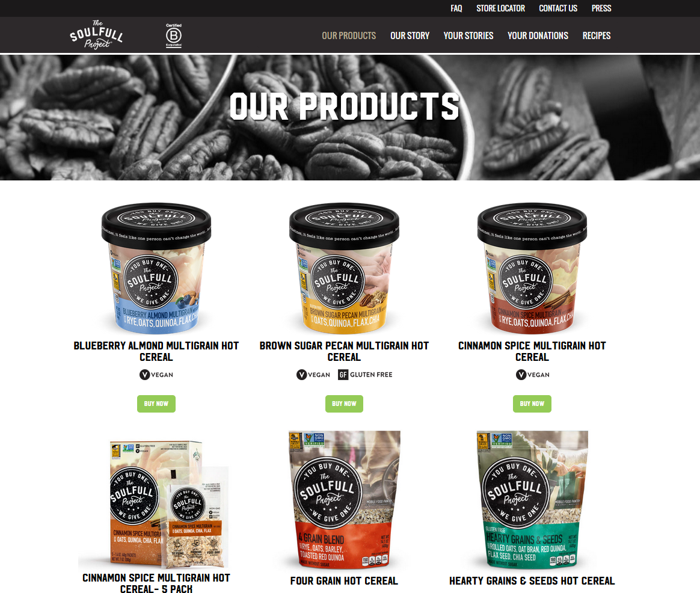
For every cup or package of healthy hot cereal they sell, they donate one to food shelters nationwide. We designed and built a site that tells their story, sells their products, and shows the impact of sales via data visualization.
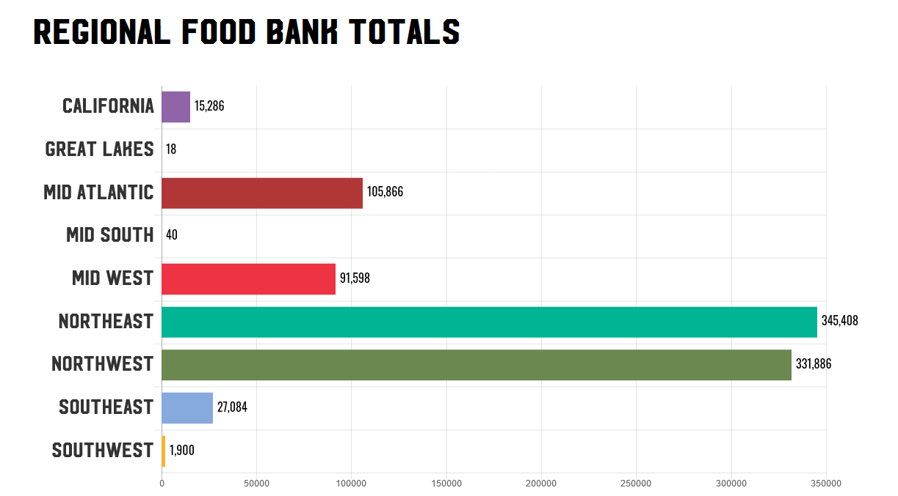
It includes custom post types for products, the team, recipes, food banks, Press mentions and a FAQ.
Mia: The Center for Data Driven Discovery of Biomedicine at the Children's Hospital of Philadelphia is the largest shared collection of pediatric genomic data in the world. Housed in CHOHP's Children’s Brain Tumor Tissue Consortium, another or our projects which is a collaborative, multi-institutional research program dedicated to the study and treatment of childhood brain tumors. The key to these projects is their invaluable step towards opensource research across institutions. The objective is to break-down research silos in order to treat and cure childhood cancers collectively.
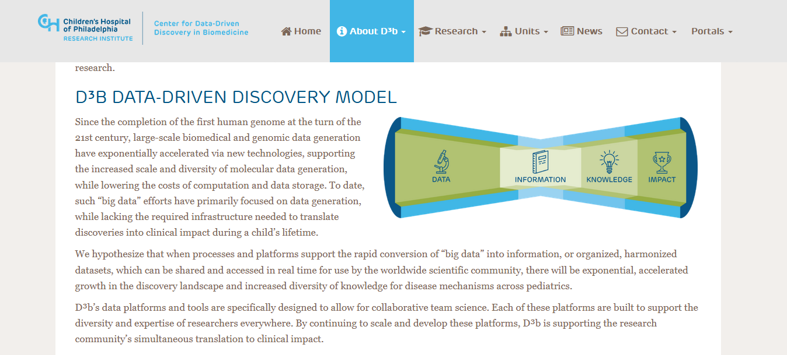
Mia: The project was fast-tracked in Feb 2016 and they needed a site immediately for a visit from Vice President Joe Biden. We did a phased approached to meet the deadline.
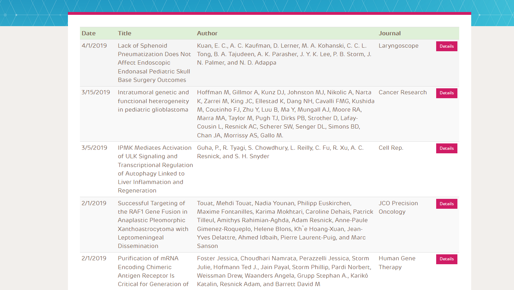
Now the site features information about their research, using 4 custom post types: Projects, Presentations, Publications and Leadership.
All Post types share a custom taxonomy so content can be filtered by audience. One key piece to this project is how easily they can use their Dashboard to manage this important content. Honestly, these people are working to cure cancer.
Tracy: The Central Conference of American Rabbis, located in NYC, is THE Reform Rabbinic leadership organization. They provide resources for the 2,100 rabbis who serve more than 1.5 million Reform Jews throughout North America, Israel, and the world.
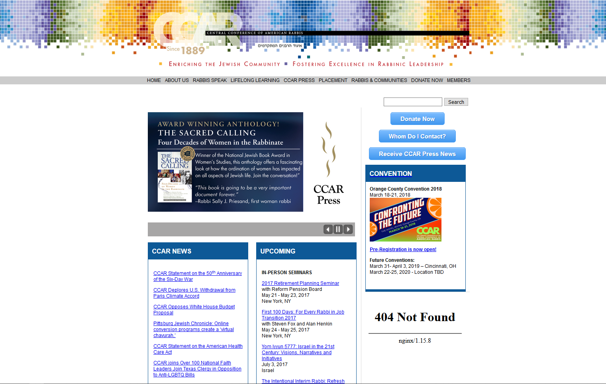
When they came to us their site was out of date, inefficient and constantly crashing. It was a big source of pain for them and their members.
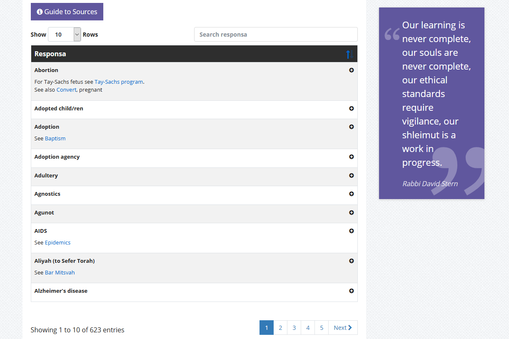
We took their 10s of thousands of content entries out of Django and parsed them into WordPress categorized posts, 4 CTPs and an events system so members can easily find the information they need.
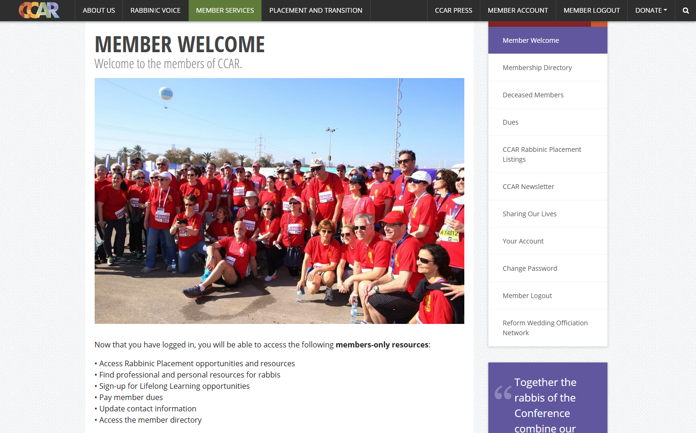
We built a tailor-made members-only section for their over 2,300 members allowing them to update their profile information and access unique content.
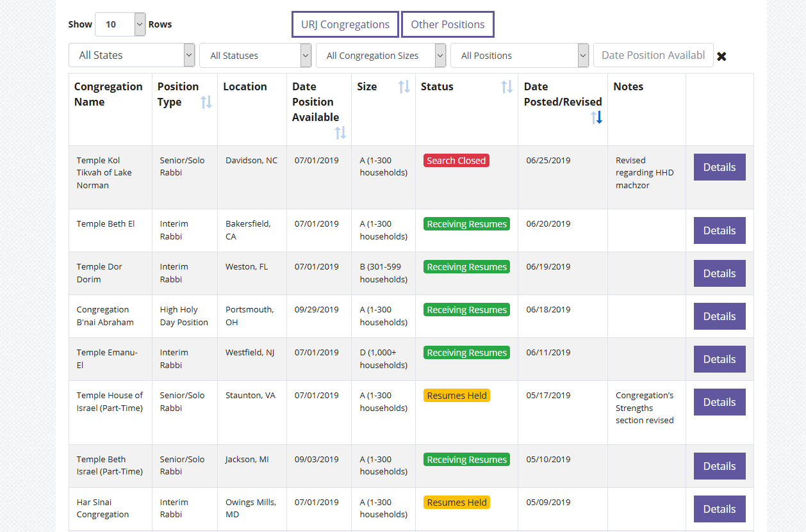
Including an extensive Placement system for Rabbis to find congregations in need of new Rabbis.
Working with the YIKES team was and continues to be a pleasure. I feel like we not only hired a website developer but found a partner in the process .
- Laurie Pinho, CFO/COO, Central Conference of American Rabbis
This was one of our most ambitious and successful projects and the CCAR is very happy with the results.
We Love WooCommerce
Mia: We love extending WooComerce to do some really cool things and have a popular WooCommerce plugin with over 80 thousand active installs.
Casa Papel is a full-service design studio, printing shop and fulfillment house in Philadelphia. They specialize in creating one-of-kind design, stationery & paper solutions. When they wanted to take their products online, they came to us. Their boutique-style, professionally curated paper and stationary products, and printing methods are unique to other commercial online vendors.
We designed and developed a product where shoppers can customize wedding invitations. The Casa Papel staff has full control over fonts used, font sizes, placement, colors, etc. The front-end user can create, customize and view their invitations in realtime.
Tracy: Giovanni’s Room is the oldest and one of the few remaining LGBTQ & feminist bookstores in the country. After 41 years of serving the LGBT community in Philadelphia, the store almost closed in 2014, but it was rescued from extinction by the organization Philly AIDS Thrift (PAT).
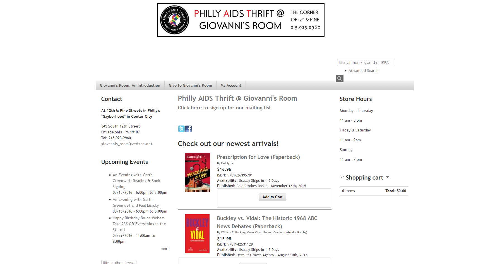
When they came to us, they had a collection of services that did not communicate with each other. Square for Point-of-Sale and inventory management, Ingram for book ordering and an old WordPress site for general information. Online orders were a manual, multi-step process and they did not have a dynamic way to browse books online.
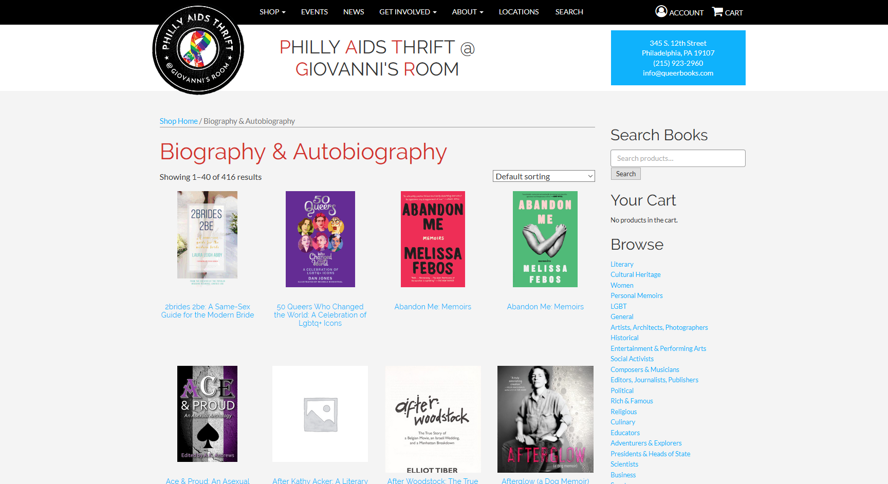
We combined their various sites into one WordPress site using WooCommerce for ecommerce synched with Square for inventory and Ingram for book data. The site has the ability to order out of stock books by dynamically creating new WooCommerce items via an Ingram search.
We came to the folks at YIKES with a project others said was impossible. Not only did they make it happen on time, they fun to work with. Magic is real, and YIKES proves it .
- Alan Chelak, Manager, PAT @ Giovanni's Room
Now PAT @ Giovanni’s room staff can accept and ship online orders in addition to products and event tickets. The website saves them a ton of time automating many tasks that used to be done manually.
We Love Building Cool Things
Here are a couple cool projects we did for PMC we want to brag about.
This is not yet live, but will be soon. We built a Charts plugin for Rolling Stong Mag that renders a visual representation of the current ranking of Top 100 Songs, Top 200 Albums, etc. Using JSON-formatted data (that is constantly being updated). Billboard competitor.
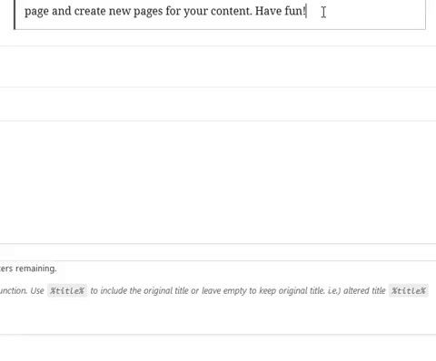
We also built a JWPlayer Gutenberg block for the PMC sales team microsites.
Supplier Diversity
A business strategy that ensures a diverse supplier base in the procurement of goods and services for any business or organization.
Many major corporations, non-profits and government organizations have set supplier diversity goals for their procurement efforts.
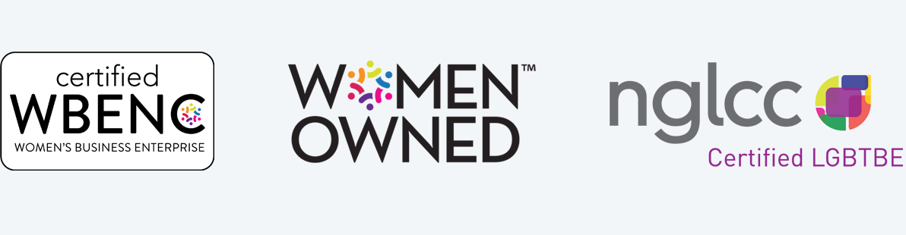
We are a certified women-owned and a certified LGBT-owned business enterprise. We are perfect for any business, non-profit organization or government organization with a supplier diversity program. For example the City of Philadelphia is now actively requesting LGBTBE certified vendors.
B Corp Certification
The only certification that measures a company’s entire social and environmental performance.
Mia: Like LEED certification for companies. Certified B Corporations adhere to the triple bottom-line: People, PLanet, Profits. Balancing purpose and profit, B Corps are legally required to consider the impact of our decisions on our workers, community, and the environment.
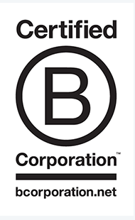
There are many large companies that are B Corp certified. Examples: Hootsuite, Cabot Creamery, Ben & Jerry's, kickstarter, Klean Kanteen, Stonyfield Organics, Eileen Fisher. This is now a global movement. Look for this logo -- Sustainable businesses love to work together.
Thank You
YIKES, Inc. Web Design and Development